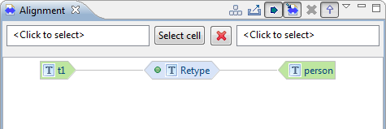
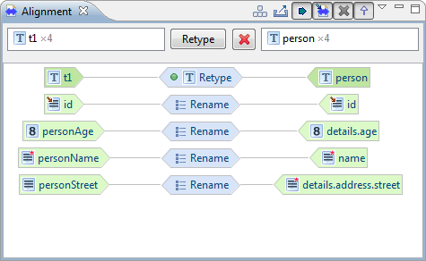
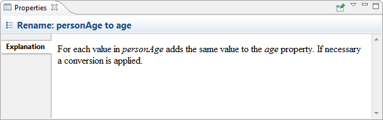
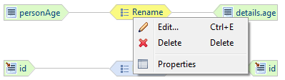

Alignment view
The Alignment view displays the current alignment in a graph
representation. By default the existing type relations are displayed
(see image below), the selectors at the top of the view can be used to
show relations associated to specific source or target types, or to a
specific type relation.

To select a type relation either double click on the cell of the type
relation displayed in the view or use the Select cell button in
the middle. If a cell is already selected, the button will state the
name of the selected relation. Pressing the button will launch a
dialog where you can select a type relation. The image below shows the
mapping of the example project provided in the
 Get started with hale studio
guide. The mapping cells displayed are those that are associated with
the selected relation. This is always the corresponding cell, defining
the type relation, but also the mappings on properties that are
applicable in the context of the mapped types.
Get started with hale studio
guide. The mapping cells displayed are those that are associated with
the selected relation. This is always the corresponding cell, defining
the type relation, but also the mappings on properties that are
applicable in the context of the mapped types.

Using the filter buttons in the view bar, you can show or hide certain relations:
|
Cells that are not linked to source schema elements, so called Augmentations |
|
Cells from base alignments |
 |
Cells that are disabled in context of the current type relation |
|
Cells that are applicable in the current context only through inheritance |
To show relations based on source or target types, independently of
defined type relations, make sure there is no type relation selected,
then select a type in the field to the left or right of the Select
cell button.
You can select a schema element or cell by clicking on the
respective graph node. The selected node is highlighted with a yellow
background. The image below shows the explanation of a selected cell
in the Properties view. In the Notes
section you can associate comments to the cell.

The Alignment view also offers the possibility to manipulate
the mapping. A selected cell may be edited or removed, using either
the context menu or the Edit menu in the main menu bar. Also,
an existing cell can be replaced with another function, the source
and target entities can be replaced, the cell priority can be set
and the cell can be enabled or disabled in the context of the current
type relation.
